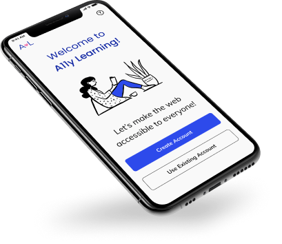
Part I: Overview
Design Roles
- Researcher
- UX/UI Designer
- Visual Designer
Deliverables
- User Survey
- Competitive Analysis
- Personas
- User Stories
- User Flows
- Sketches
- Wireframes
- Usability Tests
- Branding
- High Fidelity Mockups
- Prototype
Tools
- Figma
- Draw.io
Summary
A11y Learning is aimed to help students of design and web development to learn about accessibility so they can create accessible products for everyone.
A11y learning provides quick quizzes and links about accessibility, and an option to create notes about what you have learned.
The outcome of this project highlights the importance of creating web pages and apps that everyone can use.
Problem
Unfortunately, there are still many designers and developers that do not apply accessibility guidelines to their projects. This happens because there are so many different rules to learn or a lack of time to study the subject.
On the other hand, everyone deserves to have the same right to use websites and applications. Something needs to be done to create knowledge and conscious awareness so we can make the lives of people with disabilities easier when using websites or applications.
Solution
After the research process, A11y Learning was born to help students learn accessibility consistently using just 10 to 30 minutes per day.
Part II: Research and Discovery
User Survey
I conducted a User Survey, where I obtained 33 responses, to understand the student’s reasons for not applying accessibility guidelines to the design and development of their projects, and whether an application to help them learn accessibility would be successful in the current market.
I learned that:
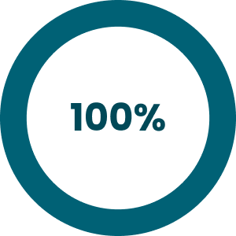
are familiar and interested in web accessibility
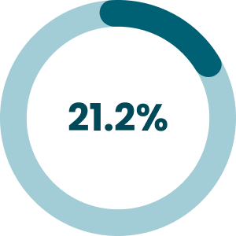
do not apply any accessibility rules
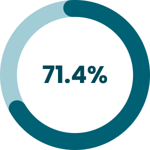
do not have the knowledge
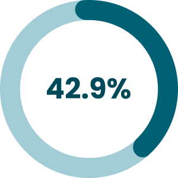
do not have time to study the subject

do not have time to apply it
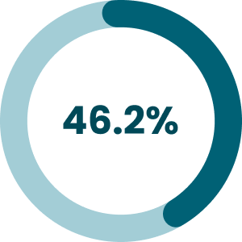
there are so many rules
Also, I asked how much time per week they spent last semester trying to learn accessibility and how much time per day would be reasonable for them to learn the subject. I learned that:
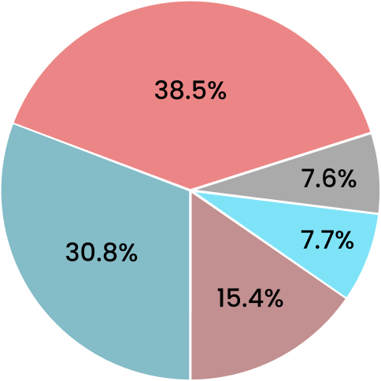
0-1 hour (30.8%)
1-2 hours (38.5%)
2-3 hours (7.7%)
3-4 hours (15.4%)
None (7.6%)
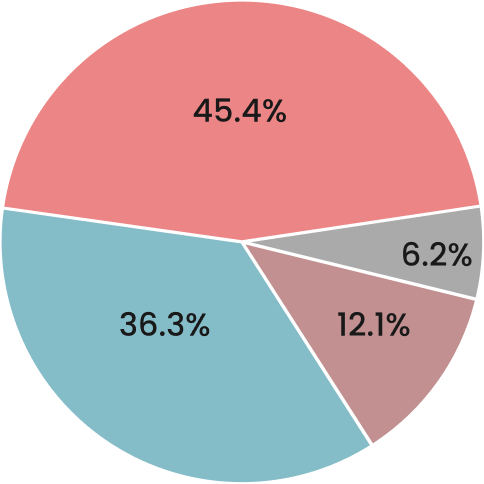
15 min (45.5%)
30 min (36.3%)
1 hour (12.1%)
None (6.2%)
Another important takeaway:
of the respondents would like to work for a company that cares about accessibility
Competitive Analysis
I did a competitive analysis of the competitors: AXE, WCAG Accessibility Checklist, and Contrast Color, to better understand the current market.
AXE for Android is an accessibility analysis tool aimed to help designers and developers to analyze the accessibility issues on Android.
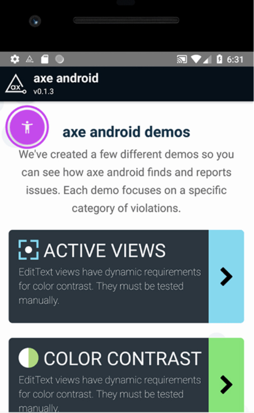WCAG Accessibility Checklist App is a tool to help developers and designers manage their accessibility checklists. It offers a to-do list with reminders and checklists to help the professionals comply with the three standards of accessibility compliance: Levels A, AA, and AAA.
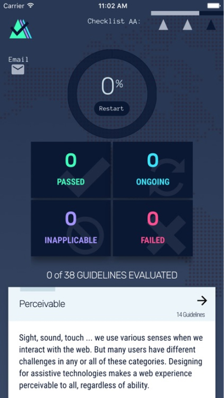Color Contrast allows the users to analyze the contrast between a screenshot or a mobile page to see if it is complying with the accessibility guidelines.
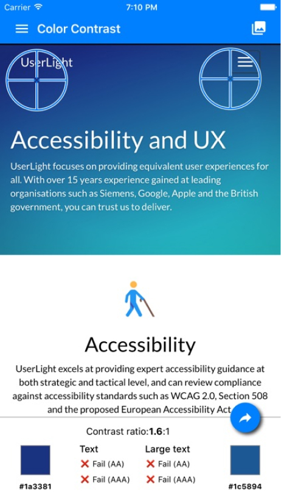Takeaways
I learned that a new competitor could enter into this marketplace by creating a new app about accessibility, but some requirements have to be observed:
- Clean design
- Free app
- Accessible app
- Tutorial to teach how to use the product
- Engaging, to have more positive reviews
- Good marketing campaign to show people how important it is to create accessible products
- Illustrative of the importance of accessibility to Designers and Developers
- Application for iOS and Android
User Personas
Based on the research process, I created three personas to represent potential users: Nicole, David, and Sofia.
Nicole- UX Design Student
- Age: 25
- Location: Santa Monica-CA
Goals
- Study web accessibility for 15 minutes per day
- Use her commute time to study
- Make a difference in the lives of many people
Frustrations
- She thinks there are so many rules about web accessibility
- She does not know which resource could help learn web accessibility
- She does not have a lot of time to study
I would love to learn more about web accessibility, but I think it is really complicated. It’s time-consuming.
David- UX Design Student
- Age: 33
- Location: Chicago-IL
Goals
- Learn about color contrast
- Use a maximum of 30 minutes per day to learn about web accessibility
- Create products that are accessible to everyone
Frustrations
- He wishes his school taught web accessibility guidelines
- There are so many rules to learn
- He has a very busy life
I need to start applying web accessibility guidelines to my projects because everyone has the right to use the internet.
Sofia- Computer Science Student
- Age: 22
- Location: Sao Paulo-SP-Brazil
Goals
- Study web accessibility every day
- Use her lunchtime to learn
- Start applying the guidelines in her projects
Frustrations
- She does not have the knowledge about the web accessibility rules
- She cannot spend too much time learning it
- The school is not going to teach it until the third year
I would love to apply the accessibility guidelines in my projects as soon as possible.
Part III: Information Architecture
User Flows
I created many User Flows for this project, such as how to sign in or sign up for an account, how to start the quiz, how to view the links of the day, how to create notes, how to set goals, and how to see achievements. Here is the user flow for the quiz:
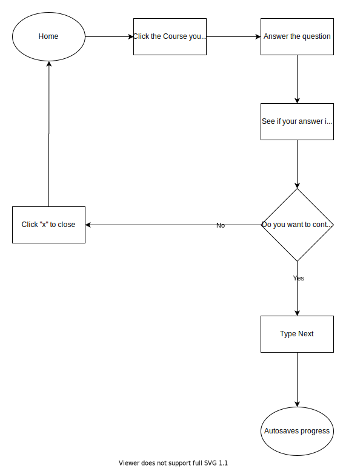Sketches & Wireframes
The next step was doing some sketches and creating the wireframes. Here are some screenshots of the main pages.
Landing Page

Homepage
Profile
Part IV: Branding and Identity
Branding
I started the branding process with a brainstorming and sketching session to come up with some ideas for the name and logo.

Name
I wanted the name of my product to include the word accessibility and also something that explains what the application is about. First, I considered Accessibility Learning, but this name is too long, so I found a shorter way to express accessibility: A11y, which is divided into A + 11 letters (C-C-E-S-S-I-B-I-L-I-T) + Y.
A + 11 letters (C-C-E-S-S-I-B-I-L-I-T) + Y = A11Y
Colors
After that, I created a mood board to show the brand’s characteristics and a style guide to document the typography and the color palette that I have chosen for this project.
As a primary color for this project I have chosen blue, and pink as a secondary color. I wanted to make sure that the colors were accessible, so I checked the background and foreground to make sure that it is reaching at least 4.5:1 of contrast.
According to the psychology of colors, blue is a color that reflects calm, relaxation, stability, trust, and loyalty. Additionally, pink is a color that is associated with love, kindness, and compassion.
A11y Learning wants users to see the platform as a source of trustworthy support where they can learn a new skill that will transform people’s lives for the better.
Primary Color
-
10
#E8EBFD
-
20
#B9C3F8
-
30
#7C88F3
-
40
#2D4AEB
-
50
#1430D2
-
60
#0F25A3
Secondary Color
-
10
#FDE8F1
-
20
#F8B9D4
-
30
#F37CAF
-
40
#EB2D7F
-
50
#D21465
-
60
#D21465
Typography
I have chosen Mulish because it is a sans serif minimalist typeface that conveys the brand identity, trustworthy and joy.
Mulish
Regular | SemiBold | Bold
Everyone has to have the same right to use websites or applications. Something needs to be done to create knowledge and conscious awareness to make the lives of people with disabilities easier when using sites or applications.
Logo
In sequence, I created a logo for my brand, which consists of an A and L, plus a heart icon. A stands for A11y and L stands for Learning. The heart symbolizes that through love we can change people's lives and have an accessible web for everyone.
Part V: Visual Design
High Fidelity Mockups
I received important feedback on my wireframes from my mentor and other teachers of the program, so I made some changes to the high fidelity mockups to improve usability. For example, I removed one page from the quiz start-up process by adding the course progress to the same page where I display the course levels.
Also, I added some illustrations to the tutorial pages to eliminate the awkward ample white space and moved all the buttons to the bottom of the page to show consistency.


Prototypes and Usability Testing
After that, I did the prototypes and conducted usability tests with three users to improve the usability in the early stages. Here are some iterations that I made based on the feedback I received.
1. I changed “Log In” from the landing page by “Use Existing Account” to be more clear to users. Besides that, on the other pages, I am using the expressions “Sign in” and “Sign up” to have more consistency and not to create confusion.
2. I added the information about goals and achievements in the tutorial.
3. I added the explanation of why the quiz answer is right or wrong.
Conclusion
The initial problem was that many designers and developers do not apply accessibility guidelines to their projects. While there are many reasons this happens, the two main reasons I found were people have a lack of time to study the subject, and there are so many different rules to learn.
After in-depth research, I learned that people do not apply the guidelines because they do not have the knowledge. Also, I discovered that a quiz-based application would help them learn accessibility in any free time they have during the day, so A11y Learning was born.
A11y Learning provides quick quizzes and links about accessibility, and an option to create notes about what you have learned.
The outcome of this project highlights the importance of creating web pages and apps that everyone can use - helping students learn about accessibility and create accessible websites is beneficial for everybody, and it can help support diversity.
Prototype